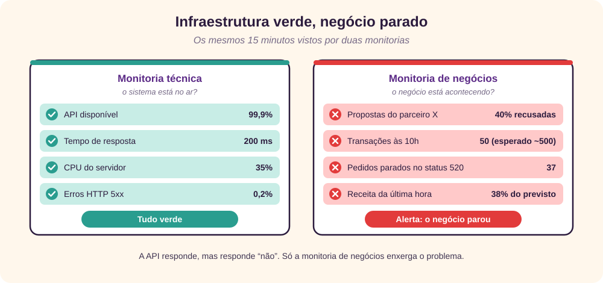
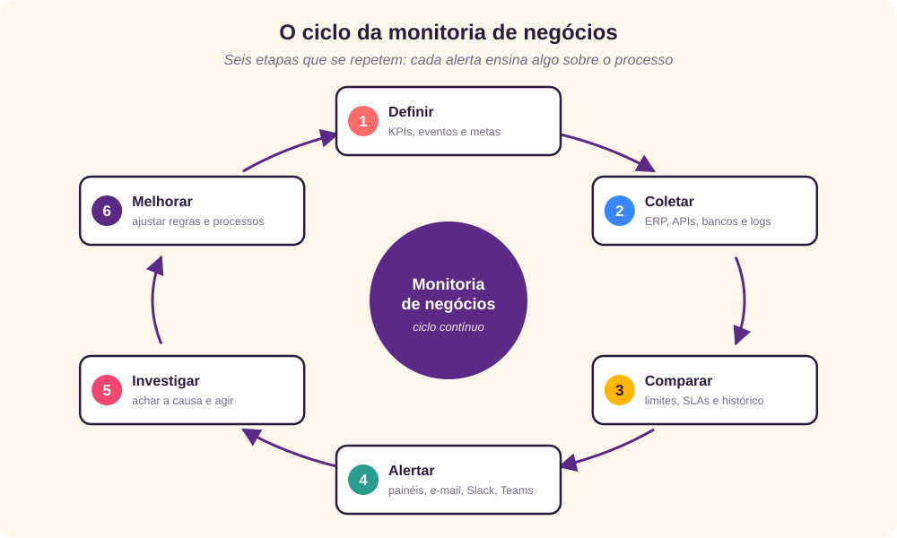
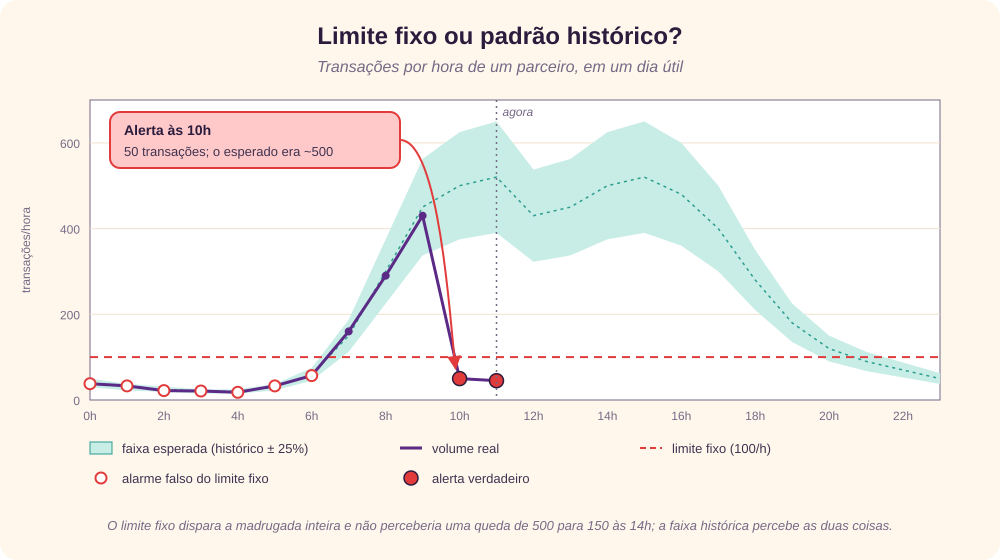

O que é monitoria de negócios
Monitoria de negócios é o acompanhamento contínuo, de preferência em tempo real, dos indicadores e eventos que mostram se a operação da empresa está funcionando como deveria. O foco não está nos servidores, na CPU ou na memória, mas na saúde dos processos de negócio: pedidos, transações, propostas, faturamento, integrações com parceiros.
Em inglês, a prática aparece como business monitoring ou business activity monitoring (BAM): o acompanhamento dos processos enquanto eles ainda estão em andamento, a partir dos eventos gerados pelos sistemas operacionais. [1] Ela herda ideias do processamento de eventos complexos, que trata cada pedido, pagamento ou mensagem como um evento de negócio a ser correlacionado com os demais. [2]
O negócio está acontecendo agora como deveria? Se não, onde, desde quando e quem precisa agir?
Na prática, a monitoria de negócios envolve cinco atividades:
- Definir o que importa: os KPIs e eventos críticos, como volume de pedidos, taxa de aprovação de transações, tempo de liquidação, falhas em integrações com parceiros e receita por hora.
- Coletar dados das fontes: ERP, APIs, bancos de dados e logs de integração.
- Comparar com o esperado: limites, metas, SLAs e o padrão histórico. Por exemplo: “às 10h costumamos ter 500 transações; hoje foram 50”.
- Alertar e dar visibilidade: painéis e alertas por e-mail, Slack ou Teams, para que o negócio e a TI ajam rápido.
- Investigar a causa: descobrir se a queda veio de um parceiro, de uma API ou de uma regra de negócio.
Uma nota de vocabulário: em português, “monitoria” também é a atividade do monitor acadêmico. Em contexto corporativo, “monitoramento de negócios” é igualmente correto e evita a ambiguidade; neste texto, os dois termos são usados como sinônimos.
Infraestrutura verde, negócio parado
A monitoria técnica responde se o sistema está no ar. O livro de Site Reliability Engineering do Google resume essa visão em quatro sinais de ouro: latência, tráfego, erros e saturação. [3] Métodos como o USE, de Brendan Gregg, e o RED, de Tom Wilkie, seguem a mesma linha, olhando para recursos e serviços. [4] [5]
Tudo isso é necessário, mas não basta. É comum a infraestrutura estar toda verde enquanto o negócio está parado: a API responde em 200 milissegundos, só que responde “não”.

| Aspecto | Monitoria técnica | Monitoria de negócios |
|---|---|---|
| Pergunta | O sistema está no ar e rápido? | O negócio está acontecendo como esperado? |
| Métricas típicas | Latência, tráfego, erros, saturação, CPU, memória, disco | Pedidos por hora, taxa de aprovação, tempo de liquidação, receita, backlog por status |
| Unidade de análise | Servidor, serviço, endpoint | Processo, produto, parceiro, canal, loja |
| Quem olha | Infraestrutura, SRE, desenvolvimento | Áreas de negócio, operações, sustentação, gestão |
| Sinal de falha | Erro 5xx, timeout, recurso esgotado | Queda de volume, recusa anormal, fila parada, evento que não chegou |
| Exemplo | “A API está respondendo em 200 ms.” | “40% das propostas do parceiro X estão sendo recusadas desde ontem.” |
As duas monitorias se complementam. A técnica costuma dizer onde está o defeito; a de negócios diz se o defeito importa e quanto ele custa. Quem só tem a primeira descobre o problema pelo cliente, pelo parceiro ou pelo fechamento do mês.
O ciclo da monitoria
Monitoria de negócios não é um painel pendurado na parede. É um ciclo que se repete, e cada alerta ensina algo sobre o processo que está sendo monitorado.

- Definir. Parta das perguntas do negócio, não dos dados disponíveis. Para cada processo crítico, escolha poucos indicadores que mostrem volume, qualidade e tempo, e defina a meta e o dono de cada um.
- Coletar. Leve os dados das fontes para um lugar onde possam ser comparados: consultas agendadas no banco, eventos de integração, logs das APIs. Guarde o histórico, porque sem ele não há padrão para comparar.
- Comparar. Confronte o valor atual com uma referência: um limite fixo, um SLA acordado ou o padrão histórico para aquele dia e horário.
- Alertar. Mostre o estado em painéis e avise quem precisa agir, no canal que essa pessoa usa. Todo alerta deve pedir uma ação; se ninguém precisa fazer nada, ele não deveria ter sido enviado. [3]
- Investigar. Cruze o alerta de negócio com a monitoria técnica e com os parceiros para achar a causa: um parceiro fora do ar, uma mudança de regra, uma integração travada.
- Melhorar. Depois de cada incidente, ajuste limites, crie os indicadores que faltaram e elimine os alertas que só geraram ruído.
Arquitetura de referência
A arquitetura de uma solução de monitoria de negócios tem cinco camadas. Ela pode começar com scripts em Python, consultas SQL e um e-mail, e evoluir para ferramentas de mercado de painéis, observabilidade e integração, sem mudar a lógica.
![Fluxo da esquerda para a direita em cinco colunas. Fontes: ERP JDE, APIs de parceiros, bancos de dados e logs de integração. Coleta: conectores com SQL agendado, eventos e webhooks, guardando o histórico. Regras: motor de regras com limites fixos, SLAs, padrão histórico e ausência de eventos, classificando em verde, amarelo ou vermelho. Saídas: painel em tempo real, alertas por e-mail, Slack e Teams e chamados abertos automaticamente. Ação: o negócio decide e a TI corrige. Uma seta tracejada volta da ação para as regras: cada incidente ajusta regras, limites e donos.](rc_images/MonitoriaArquitetura.svg)
| Camada | Responsabilidade | Para começar | Para crescer |
|---|---|---|---|
| Fontes | Os sistemas que registram o negócio | Leitura das tabelas do ERP e dos logs de integração | Eventos publicados pelos próprios sistemas |
| Coleta | Extrair, padronizar e guardar histórico | Scripts Python ou SQL agendados a cada 5 a 15 minutos | Filas, streaming e um banco de séries temporais |
| Regras | Comparar com o esperado e classificar | Limites fixos e regras de ausência de eventos | Padrão histórico por dia e horário, detecção de anomalias |
| Saídas | Dar visibilidade e avisar | E-mail e um painel simples | Slack ou Teams, abertura automática de chamados, escalonamento |
| Ação | Decidir e corrigir | Um dono por indicador e um roteiro por alerta | Plantão, análise pós-incidente, revisão mensal das regras |
Foi esse o caminho de uma ferramenta que desenvolvi em Python para dar visibilidade à operação dos parceiros de API de um banco: começar pequeno, com consultas e alertas simples sobre os processos que mais doíam, e crescer conforme cada incidente mostrava o que faltava medir.
Limite fixo ou padrão histórico
A camada de regras é onde a monitoria de negócios ganha ou perde credibilidade. Uma regra mal calibrada gera alarmes falsos, as pessoas passam a ignorá-los e, no dia do problema real, ninguém olha. O inverso também acontece: uma regra frouxa demais deixa o problema passar.

Há cinco tipos de regra, e uma boa monitoria combina vários:
| Tipo de regra | Exemplo | Quando usar | Cuidado |
|---|---|---|---|
| Limite fixo | Mais de 20 pedidos parados no mesmo status | Filas, backlogs, estoques mínimos | Ignora a sazonalidade do dia e da semana |
| SLA | Liquidação acima de 30 minutos | Prazos acordados com clientes e parceiros | Medir pelo evento de negócio, não pela chamada técnica |
| Proporção | Taxa de recusa acima de 15% | Aprovações, conversões, erros de validação | Com volume baixo, a taxa oscila muito; exija um volume mínimo |
| Padrão histórico | Volume fora da faixa do mesmo dia e horário nas últimas semanas | Transações, vendas, acessos | Feriados e campanhas distorcem o histórico |
| Ausência de evento | Nenhum pedido do parceiro X nos últimos 30 minutos em horário comercial | Integrações e arquivos que deveriam chegar | É o alerta mais valioso e o mais esquecido |
O capítulo sobre alertas baseados em SLOs do Site Reliability Workbook propõe avaliar cada regra por quatro critérios que servem também para o negócio: precisão (quantos alertas eram problemas reais), sensibilidade (quantos problemas reais geraram alerta), tempo de detecção e tempo para o alerta se encerrar depois que o problema acaba. [6]
Indicadores por segmento
Os indicadores mudam de um negócio para outro, mas a lógica é a mesma: volume, qualidade e tempo de cada processo crítico, recortados pela dimensão que ajuda a achar a causa, como parceiro, loja ou canal.
| Segmento | Indicadores | Exemplo de regra |
|---|---|---|
| Banco ou fintech | Volume e taxa de erro das operações via API por parceiro, taxa de aprovação de propostas, tempo de liquidação, conciliação | Taxa de recusa do parceiro acima de duas vezes a média das últimas quatro semanas no mesmo horário |
| Varejo | Fluxo de clientes, conversão, ticket médio, ruptura de estoque e vendas por loja | Loja sem venda registrada há 45 minutos com a loja aberta |
| ERP (JD Edwards) | Pedidos travados em um status, lotes de integração não processados, falhas em interfaces EDI, jobs em erro | Pedidos de venda parados no mesmo status há mais de 2 horas |
| Comércio eletrônico | Carrinhos abandonados, pagamentos recusados por meio de pagamento, pedidos sem nota fiscal | Recusa de cartão acima de 10% em 15 minutos |
| Logística | Coletas e entregas no prazo, pedidos sem movimentação, devoluções | Pedido faturado sem coleta em 24 horas |
Para ligar os indicadores à estratégia e evitar medir só o que é fácil, vale olhar para o Balanced Scorecard, de Kaplan e Norton, que organiza as métricas em perspectivas financeira, de clientes, de processos internos e de aprendizado. [7] E para desenhar os painéis, os princípios de Stephen Few: tudo o que importa numa única tela, lido de relance, sem enfeites que disputem a atenção. [8]
Proposta de implantação
Esta seção pode ser usada como base de uma proposta para implantar a monitoria de negócios numa empresa ou numa área. Os prazos são uma referência para um primeiro ciclo e devem ser ajustados ao tamanho do escopo.
Objetivo
Detectar problemas nos processos críticos do negócio antes que clientes, parceiros ou o fechamento do mês os revelem, e dar a cada problema um dono e uma ação.
Escopo
| Dentro do escopo | Fora do escopo |
|---|---|
| De três a cinco processos críticos no piloto, escolhidos com o negócio | Monitoria de infraestrutura, que continua com as ferramentas atuais |
| Coleta a partir do ERP, das APIs e dos logs de integração existentes | Mudanças nos sistemas de origem |
| Regras, painel, alertas e roteiros de ação | Relatórios gerenciais e análises históricas de BI |
Fases
- Fase 0 · Diagnóstico · 2 semanasEntrevistas com as áreas de negócio, levantamento dos incidentes dos últimos meses, escolha dos processos do piloto e inventário das fontes de dados.
- Fase 1 · Piloto · 4 a 6 semanasFichas dos indicadores, coleta, regras, painel e alertas para os processos escolhidos. Uma semana de alertas em modo silencioso para calibrar limites antes de avisar as pessoas.
- Fase 2 · Expansão · 6 a 8 semanasNovos processos, padrão histórico por dia e horário, integração com o sistema de chamados e escalonamento.
- Fase 3 · Operação contínuaRevisão mensal de indicadores e regras, análise de cada incidente e relatório de resultados para os patrocinadores.
Entregáveis
- Catálogo de indicadores: uma ficha por indicador, no modelo abaixo.
- Coletores e regras: código versionado, documentado e agendado.
- Painel: uma visão por processo, com o estado atual e a tendência do dia.
- Alertas e roteiros: cada alerta com canal, severidade, dono e a primeira ação esperada.
- Relatório do piloto: incidentes detectados, tempo de detecção, alarmes falsos e recomendações.
Modelo de ficha de indicador
| Indicador | Taxa de recusa de propostas do parceiro X |
|---|---|
| Pergunta de negócio | O parceiro está conseguindo contratar normalmente? |
| Fonte | Tabela de propostas e log da API de contratação |
| Fórmula | Propostas recusadas ÷ propostas recebidas, nos últimos 30 minutos |
| Frequência | A cada 5 minutos, das 8h às 20h |
| Regra de alerta | Acima de 2× a média das últimas 4 semanas no mesmo horário, com pelo menos 30 propostas |
| Severidade e canal | Alta · Teams do time de parceiros e e-mail do gerente da conta |
| Dono | Gerente de parcerias; apoio técnico da sustentação de APIs |
| Primeira ação | Verificar os motivos de recusa mais frequentes e contatar o parceiro |
Papéis
| Papel | Responsabilidade |
|---|---|
| Patrocinador | Garante prioridade, acesso às áreas e decisão sobre o escopo |
| Dono do indicador (negócio) | Define a meta, recebe o alerta e decide a ação de negócio |
| Analista de monitoria | Desenha indicadores e regras, calibra limites e mantém o catálogo |
| TI e sustentação | Dá acesso às fontes, corrige falhas técnicas e mantém os coletores |
| Parceiros | Informam janelas de manutenção e apoiam a investigação |
Critérios de sucesso
- Detecção antecipada: a maior parte dos incidentes de negócio detectada pela monitoria antes do cliente ou do parceiro.
- Tempo de detecção: de horas ou dias para minutos nos processos do piloto.
- Alertas úteis: pelo menos 8 em cada 10 alertas levam a uma ação.
- Uso: as áreas de negócio consultam o painel no dia a dia, e não só quando alguém avisa.
Riscos e como mitigá-los
- Fadiga de alertas. Alarmes demais fazem as pessoas pararem de olhar. Comece com poucas regras, use o modo silencioso para calibrar e elimine o que não gera ação.
- Indicador sem dono. Um alerta que chega para todos não chega para ninguém. Nenhum indicador entra em produção sem dono e primeira ação definidos.
- Dados de má qualidade. Cadastros incompletos e horários inconsistentes geram alarmes falsos. Inclua a qualidade da coleta na própria monitoria.
- Painel sem ação. Um painel bonito que ninguém usa não é monitoria. Cada indicador precisa responder a uma pergunta de negócio.
- Depender de uma só pessoa. Documente regras e coletores, versione o código e distribua o conhecimento na equipe.
Conclusões
A monitoria técnica diz se os sistemas estão funcionando; a monitoria de negócios diz se a empresa está funcionando. Sem a segunda, a infraestrutura pode estar toda verde enquanto propostas são recusadas, pedidos ficam parados e parceiros deixam de operar, e o problema só aparece quando alguém de fora reclama.
Implantá-la não exige começar com uma plataforma cara. Exige escolher os processos que mais importam, dar um dono e uma ação a cada indicador, comparar com o que é normal para aquele dia e horário e aprender com cada incidente. O resto, da ferramenta ao painel, pode crescer aos poucos.
O ganho vai além de detectar falhas mais cedo. Ao colocar negócio e TI olhando para os mesmos números, a monitoria de negócios cria uma linguagem comum sobre o que é a operação funcionando bem, e essa talvez seja a sua maior contribuição.
↑ Voltar ao topoReferências
- Wikipedia, "Real-time business intelligence", seção "Business activity monitoring", acesso em 29/09/2026, en.wikipedia.org/wiki/Real-time_business_intelligence.
- Luckham, David, The Power of Events: An Introduction to Complex Event Processing in Distributed Enterprise Systems, Addison-Wesley, 2002.
- Beyer, Betsy; Jones, Chris; Petoff, Jennifer; Murphy, Niall Richard (orgs.), Site Reliability Engineering: How Google Runs Production Systems, O’Reilly, 2016, capítulo 6, "Monitoring Distributed Systems", sre.google/sre-book/monitoring-distributed-systems.
- Gregg, Brendan, "The USE Method", acesso em 29/09/2026, brendangregg.com/usemethod.html.
- Wilkie, Tom, "The RED Method: How to Instrument Your Services", Grafana Labs, 2018, grafana.com/blog.
- Beyer, Betsy; Murphy, Niall Richard; Rensin, David K.; Kawahara, Kent; Thorne, Stephen (orgs.), The Site Reliability Workbook, O’Reilly, 2018, capítulo 5, "Alerting on SLOs", sre.google/workbook/alerting-on-slos.
- Kaplan, Robert S.; Norton, David P., The Balanced Scorecard: Translating Strategy into Action, Harvard Business School Press, 1996.
- Few, Stephen, Information Dashboard Design: The Effective Visual Communication of Data, O’Reilly, 2006.
![Left-to-right flow in five columns. Sources: JDE ERP, partner APIs, databases and integration logs. Collection: connectors with scheduled SQL, events and webhooks, storing history. Rules: a rules engine with fixed thresholds, SLAs, historical pattern and missing events, classifying as green, amber or red. Outputs: real-time dashboard, alerts by email, Slack and Teams, and auto-created tickets. Action: the business decides and IT fixes. A dashed arrow returns from action to rules: every incident tunes rules, thresholds and owners.](rc_images/MonitoriaArquitetura-en.svg)
![Flusso da sinistra a destra in cinque colonne. Fonti: ERP JDE, API dei partner, database e log di integrazione. Raccolta: connettori con SQL pianificato, eventi e webhook, salvando lo storico. Regole: motore di regole con soglie fisse, SLA, andamento storico ed eventi mancanti, classificando in verde, giallo o rosso. Uscite: cruscotto in tempo reale, allarmi via e-mail, Slack e Teams e ticket aperti automaticamente. Azione: il business decide e l’IT corregge. Una freccia tratteggiata torna dall’azione alle regole: ogni incidente affina regole, soglie e responsabili.](rc_images/MonitoriaArquitetura-it.svg)
![Flujo de izquierda a derecha en cinco columnas. Fuentes: ERP JDE, API de los socios, base de datos y logs de integración. Recolección: conectores con SQL programado, eventos y webhooks, guardando el histórico. Reglas: motor de reglas con umbrales fijos, SLA, patrón histórico y eventos ausentes, clasificando en verde, amarillo o rojo. Salidas: tablero en tiempo real, alertas por correo, Slack y Teams y tickets abiertos automáticamente. Acción: el negocio decide y TI corrige. Una flecha punteada vuelve de la acción a las reglas: cada incidente afina reglas, umbrales y responsables.](rc_images/MonitoriaArquitetura-es.svg)
![Gráfico de líneas de las transacciones por hora a lo largo de un día. Una franja verde muestra el volumen esperado según el histórico, más o menos 25%, bajo de madrugada y cerca de 500 por hora entre las 10 h y las 16 h. El volumen real sigue la franja hasta las 9 h y se desploma a 50 a las 10 h, donde se dispara una alerta: se esperaban cerca de 500. Una línea punteada roja marca un umbral fijo de 100 por hora: entre la medianoche y las 6 h el volumen normal queda por debajo, generando falsas alertas.](rc_images/MonitoriaBaseline-es.svg)